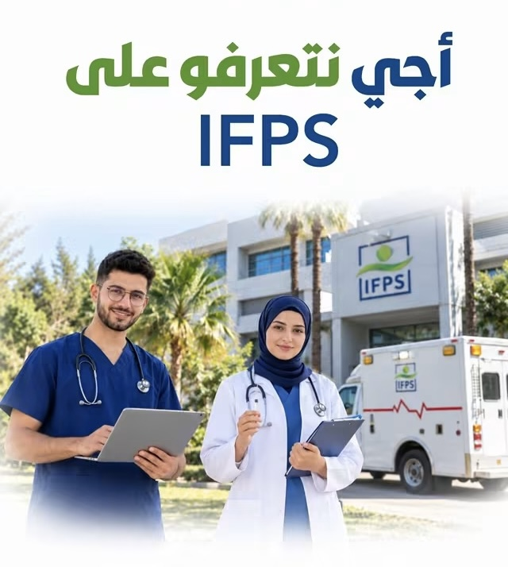
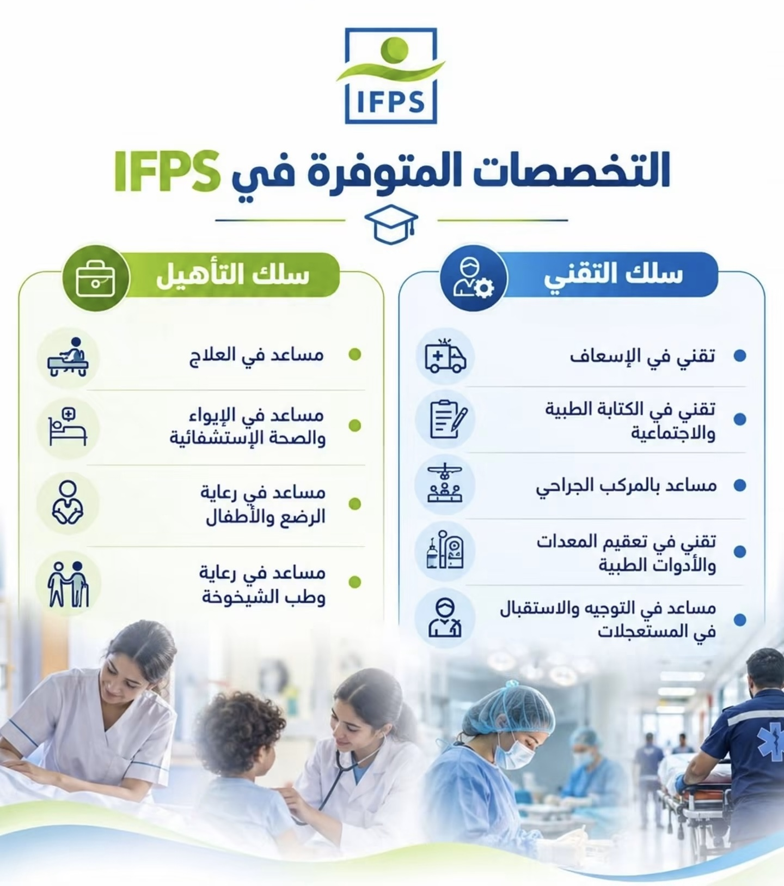
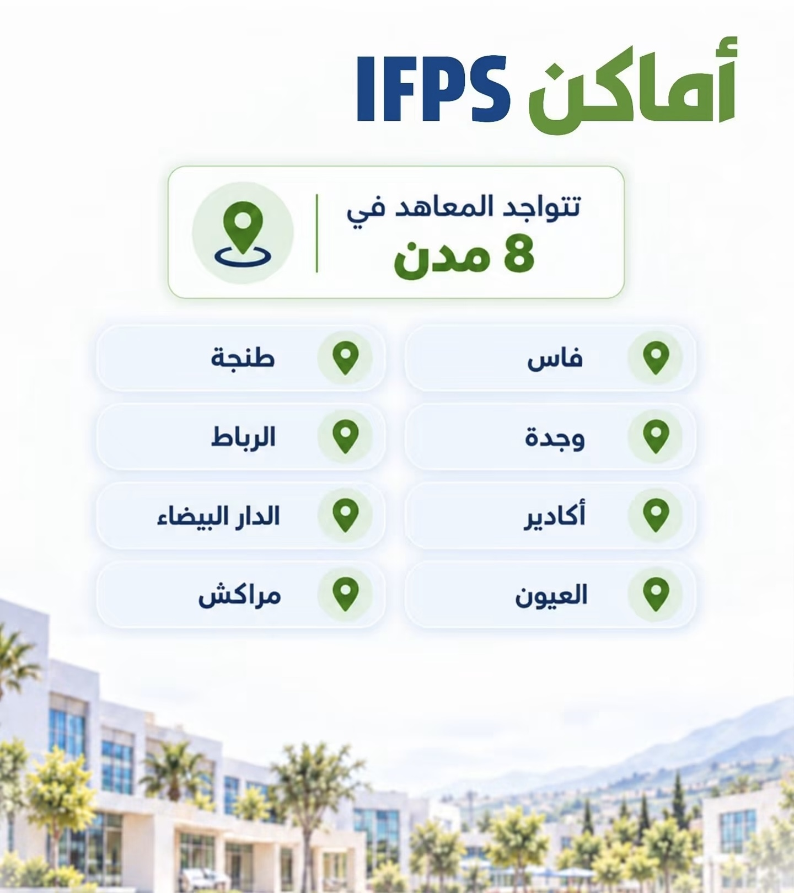
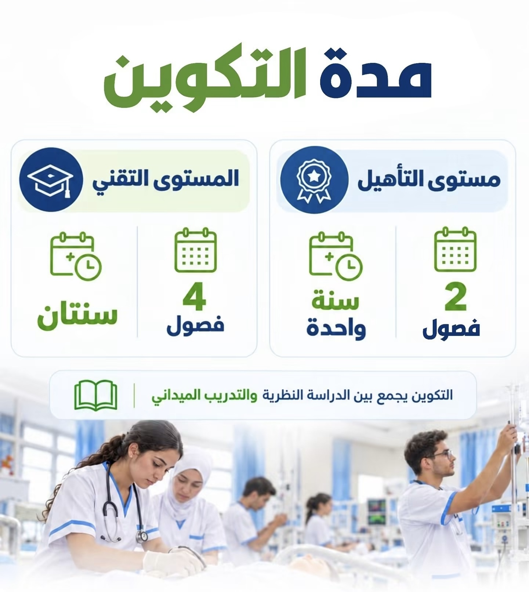
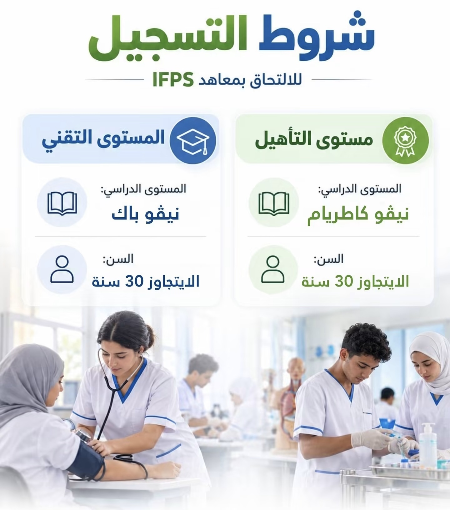
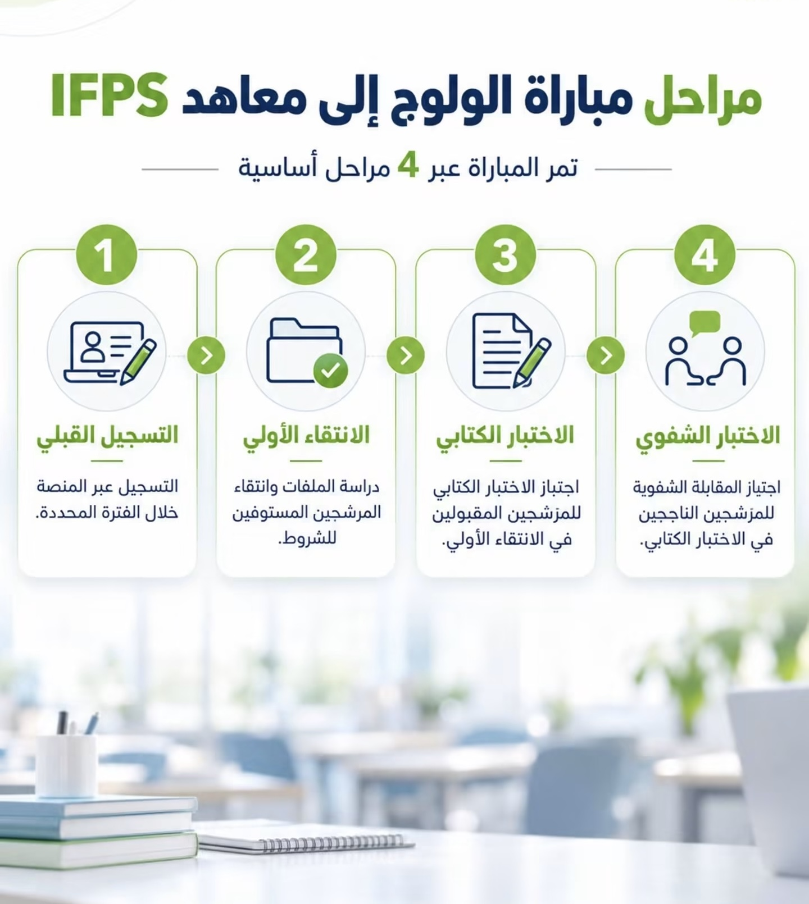
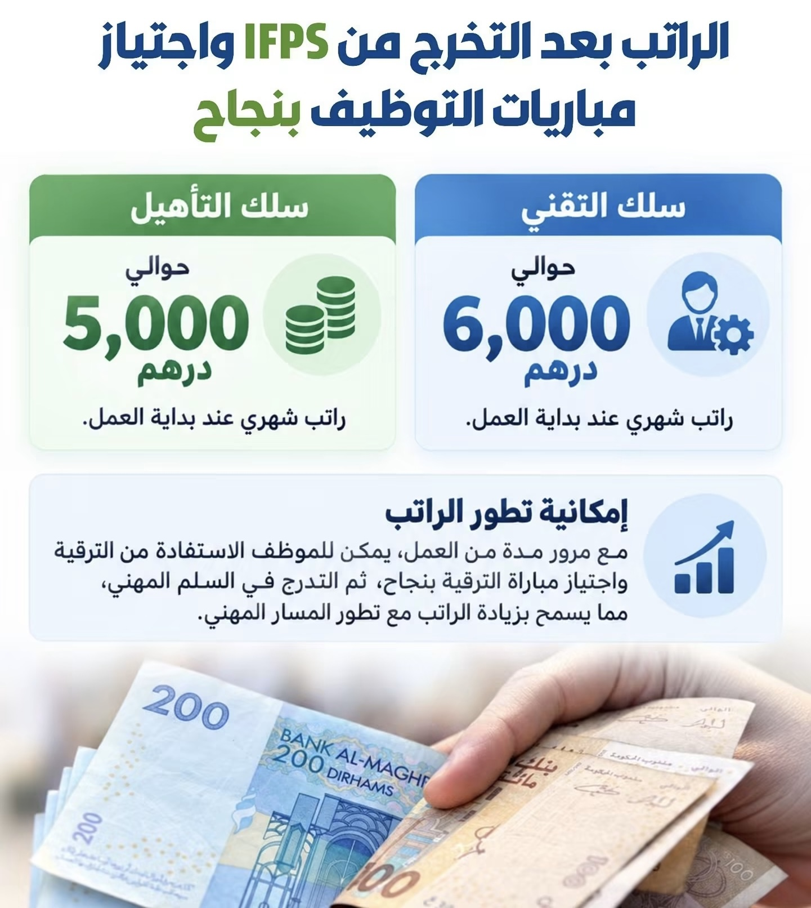

التكوين المجاني في معاهد IFPS: التخصصات والمدن ومدة التكوين والشروط ومراحل المباراة

تنبيه: المعلومات التالية مبنية على دورة 2025-2026. إعلان الدورة الجديدة لم يصدر بعد، ويُتوقع صدوره قريبًا. قد تتغير الشروط والتواريخ، فتأكد دائمًا من الإعلان الرسمي لوزارة الصحة والحماية الاجتماعية قبل التسجيل.
تتيح معاهد التكوين المهني في الميدان الصحي (IFPS) تكوينًا مجانيًا تشرف عليه الدولة، وتفتح أبوابها لحاملي مستوى الثالثة إعدادي والباكالوريا. إليك أهم ما يجب معرفته.
التخصصات المتوفرة
تنقسم التخصصات إلى سلكين: سلك التقني وسلك التأهيل.

المدن
تتوفر المعاهد في ثماني مدن، وأجريت مباراة الدورة الماضية يوم الأحد 25 يناير 2026 في هذه المدن نفسها.

مدة التكوين
التكوين يجمع بين الدراسة النظرية والتدريب الميداني.

الشروط
إضافة إلى ما في الصورة: يشترط في المترشح الجنسية المغربية، وتشترط شعبة النقل والإسعاف الصحي رخصة سياقة من صنف B أو C.

مراحل المباراة

طريقة التسجيل
جرى التسجيل في الدورة الماضية عبر الإنترنت من 15 إلى 24 دجنبر 2025 في المنصة الرسمية للمعاهد.
يلزمك رقم مسار (حرف و9 أرقام)، ورقم البطاقة الوطنية، وتاريخ الازدياد، وبريد إلكتروني. تُرفع الوثائق بصيغة PDF، ولا يمكن تعديل المعلومات بعد المصادقة، فراجعها جيدًا قبل التأكيد. في النهاية تُطبع استمارة التسجيل.
الراتب بعد التخرج

الأرقام الواردة في الصورة تقريبية وليست من إعلان رسمي، وقد تختلف حسب الوضع الإداري.